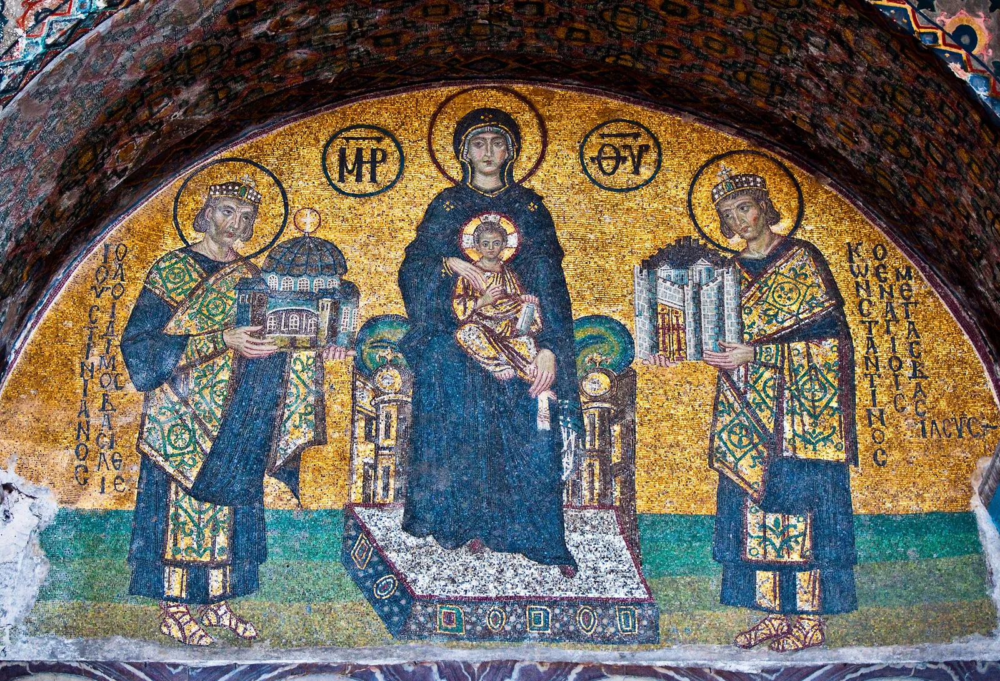
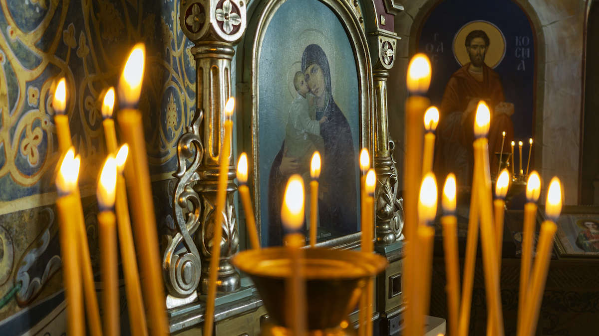

The Three Main Branches of Eastern Orthodoxy
The Greek Orthodox Church
The Greek Orthodox Church is part of the Eastern Orthodox Christian tradition and is centered in Greece. It is one of the oldest Christian denominations, with its roots in the early Christian church. The Greek Orthodox Church is known for its rich liturgical traditions, emphasis on the sacraments, and strong cultural connection to Greek heritage. It is led by the Archbishop of Constantinople, who holds a primacy of honor.
The Russian Orthodox Church
The Russian Orthodox Church is the largest of the Orthodox Christian branches, with its center in Russia. It has a deeply significant role in Russian history, culture, and spirituality. The church follows traditional Eastern Orthodox practices and is known for its grand liturgies, iconography, and monasticism. The Patriarch of Moscow is the leader of the Russian Orthodox Church, and it has a significant influence in Russian society and beyond.
The Antiochian Orthodox Church
The Antiochian Orthodox Church, also known as the Greek Orthodox Church of Antioch, is one of the oldest Christian communities, based in the ancient city of Antioch (modern-day Antakya, Turkey). This church has a strong presence in the Middle East, especially in Syria, Lebanon, and Jordan. It follows the Eastern Orthodox traditions and is led by the Patriarch of Antioch. The church has a rich history in evangelism and theological scholarship.
Other Branches of Orthodoxy
- The Orthodox Church of America
- The Romanian Orthodox Church
- The Serbian Orthodox Church